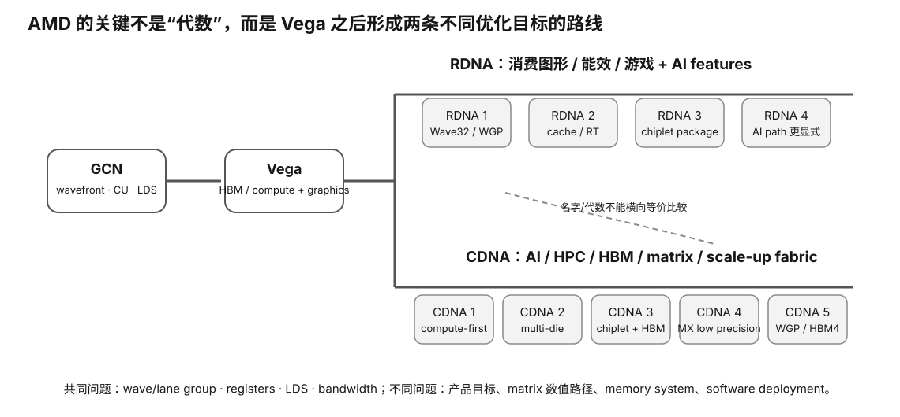

AMD Architecture · 4/4 · L0→L2
AMD 架构主线（四）：RDNA3 / RDNA4 与 CDNA4 / CDNA5
这一节的目标不是追逐“最新型号”，而是学会读现代 AMD 的两条并行路线：RDNA 继续面向高性能图形与消费 AI，CDNA 则围绕大规模 AI/HPC 的矩阵、HBM、chiplet 与互联。现代产品变化快，所以稳定教材只保留架构方向，具体 SKU/支持矩阵必须在你学习时重新查询。

Prerequisite Check
你应能分别解释 RDNA 的图形效率目标与 CDNA 的计算/HBM/互联目标，并知道 current runtime support 属于动态事实。
真实问题：AMD 现在都宣传 AI accelerator，RDNA 与 CDNA 是否已经“变成一回事”？
没有。两条线都可以加入 AI/矩阵加速能力，但产品目标仍不同。消费图形 GPU 需要平衡 raster、ray tracing、display、成本和游戏能效；Instinct 计算加速器则可以把更多面积、封装和功耗预算投入矩阵吞吐、HBM、可靠性与 GPU-to-GPU fabric。
1. RDNA3：chiplet 思维进入高端消费 GPU
RDNA3 把 chiplet/分离 die 的思路用于部分高端 GPU，把不同功能放在不同 die 上。你不需要记每个 die 名称，只需理解现代 GPU 可以把“计算”和“memory/cache/I/O”在封装内重新组合。
monolithic mental model: one large die chiplet/package mental model: compute die(s) ↔ package fabric ↔ memory/cache related die(s)
这样做可以改善制造与扩展灵活性，但也引入新的片上/封装数据移动问题。对应用而言，理想情况是软件隐藏这些复杂性；对性能分析而言，数据 locality 仍值得关注。
2. RDNA4：消费 GPU 的 AI acceleration 更显式
AMD 官方将 RDNA4 描述为继续提升每 CU 性能/能效，并强化光追与 AI acceleration 的一代。对于本地 LLM 学习，最重要的不是宣传中的某个倍数，而是：
- RDNA 消费架构正在增加更明确的 AI/矩阵相关硬件能力；
- “硬件存在”仍不等于 llama.cpp/框架立即拥有高效 kernel；
- exact Radeon SKU 的 VRAM、bandwidth 与当前 ROCm/backend 支持仍决定真实价值。
为什么“AI accelerator”不能直接和 Tensor Core/XMX 计数横比？
厂商的命名与计数口径不同。跨厂商比较应回到：
supported operation/data type × operations per instruction/cycle × number of units × clocks × utilization × memory/data movement × software kernel
只比较“AI accelerator 数量”没有统一物理意义。
3. CDNA4：更低精度、更高矩阵吞吐与 HBM3E
AMD 的 CDNA4 官方资料继续强调矩阵核心、向量/矩阵吞吐、低精度 AI 数值格式、HBM3E 与 Infinity Fabric。稳定的学习结论是：AI 数据中心加速器正在用更多硬件与封装资源换取更高 memory capacity/bandwidth 和更密集的低精度矩阵计算。
FP4/FP6/FP8 等更低精度为什么出现？
降低位宽可以减少存储和传输字节，并提高理论矩阵吞吐，但数值误差、动态范围、scaling 和模型适配压力上升。因此：
lower bits → less memory traffic + more potential compute → stricter numerical/format requirements → needs model + kernel + runtime cooperation
“支持 FP4”绝不等于“任意 4-bit 模型都以峰值 FP4 跑”。
4. CDNA5：现在已经能从“路线图”升级成具体架构理解
这页早期版本把 CDNA5 当成“未来/新一代”来写；到 2026 年，AMD 官方 CDNA generation overview 已经给出更具体的 CDNA5 架构信息，因此这里可以把它当作一个很好的教材维护案例：稳定方法不变，但已公开的 architecture fact 应及时升级。
- 执行组织：官方资料把 CDNA5 描述为新的 Work Group Processor（WGP）组织，并加入 Wave32 execution。不要把旧代 CU 数量直接拿来做等比例比较。
- 低精度：继续扩展 MXFP8 / MXFP6 / MXFP4 等 block-scaled AI 数值路径；这仍不等于任意 GGUF/AWQ “4-bit”都会自动落到这些指令。
- Memory system：MI400 系列把 HBM4 带入这一代，架构目标继续围绕更大的模型、context 与 KV traffic 抬高 memory roof。
- 数据移动：官方还列出 Tensor Data Mover、L2 multicast 等减少 register staging / 重复 memory traffic 的机制。它们再次说明现代 AI GPU 的进步不仅是“矩阵单元更多”。
以后 CDNA6 或其他新代际出现时，仍用同一模板重查：执行组织、numeric modes、HBM/cache、package/fabric、runtime support、目标 workload 是否命中新能力。
5. RDNA4 与 CDNA4：同一个“4”没有比较意义
| 维度 | RDNA4 路线 | CDNA4 路线 |
|---|---|---|
| 首要目标 | 消费图形性能/效率 + AI features | AI/HPC compute throughput |
| 内存 | 消费 GPU VRAM 体系 | HBM3E 等高带宽大容量体系 |
| 专用资源 | 图形、光追、AI 等平衡 | 矩阵/向量计算优先 |
| 系统 | 桌面/工作站/消费平台 | 服务器、OAM、多加速器互联 |
| 本地 LLM 判断 | SKU fit + backend + price | 部署/软件/形态 gate 先行 |
Worked Example：一张新 RDNA4 消费卡和一张退役 CDNA 卡怎么比较？
先拒绝“哪个架构更高级”这个问题。改问：
- 我的模型/上下文需要多少真实可用显存？
- 目标 runtime 在我的 OS 上支持哪张？
- 目标 quant/model kernel 哪边成熟？
- 是否需要显示输出、普通风冷、桌面机箱？
- 持续功耗/噪声/PSU 能否接受？
- 真实 PP/TG/PPL 与价格差多少？
CDNA 可能在 HBM/matrix 上压倒性强，却在家用部署上付出巨大成本；RDNA 可能更易装机，却需要验证 AI backend。系统目标决定答案。
Why it matters
- 帮助你读现代 AMD，而不是把“AI”三个字当成统一能力。
- 理解 chiplet/package 已成为 GPU 架构的一部分。
- 学会处理更低精度格式：位宽越低，越需要数值与软件证据。
- 把“新架构发布”与“我的 runtime 可用”拆成两条时间线。
- 形成不会被下一代产品名打乱的长期阅读模板。
常见误区
- “RDNA4 有 AI accelerator，所以等于消费版 CDNA”——产品目标仍不同。
- “FP4 = 任何 4-bit quant”——数值格式与权重量化 scheme 不同。
- “CDNA5 在官方表里，所以今天我的框架一定支持”——硬件路线与软件 readiness 不同步。
- “chiplet 一定比 monolithic 快”——封装方法本身不是应用性能结论。
- “厂商 AI 单元数量可以直接横比”——口径不统一。
小实验与预期观察
做一张“new-generation claim ledger”：每条 claim 标记为 architecture fact、exact-SKU fact、software-support fact、measured fact。任选 RDNA4/CDNA4 各一项能力。预期你会看到大部分购买结论至少需要后三类证据之一，不能停在 architecture marketing。
无硬件路径
本节就是为无新硬件学习设计：只用 AMD 官方 architecture/ISA/ROCm 文档完成。真正性能数字以后在课程实验里测，不在教材里编造。
排错
- 新 GPU 驱动能装但 ROCm 应用失败：查 exact device support 与 application build。
- 硬件宣称低精度支持但模型没加速：查 quant format → kernel → instruction path。
- 跨代规格看起来矛盾：确认比较的是 CU、WGP、matrix core 还是 marketing processor，避免口径错位。
Retrieval Practice
- RDNA 与 CDNA 都能谈 AI，为什么仍不能合并成一条产品线理解？
- chiplet 解决哪些制造/扩展问题，同时引入什么数据移动问题？
- 为什么 FP4 支持不等于任意 4-bit LLM 量化获得 FP4 峰值？
- 如何写一个不会随下一代发布过期的“新 GPU 架构调查模板”？
- 为什么 RDNA4 与 CDNA4 名称中的“4”没有性能比较意义？
- 列出 architecture fact、SKU fact、software fact、measured fact 的区别。
Decision Rule
新架构只负责提出候选能力，不负责给出购买答案。对现代 AMD，必须把 exact SKU、current ROCm/backend、model fit、real workload、system feasibility 和价格证据接上，才能进入决策。
Transfer
以后任何 AMD 新一代都沿用 claim ledger。换 NVIDIA/Intel/Apple 时也一样：把发布会 claim 降级成待验证假设，再通过规格、软件支持和真实 measurement 逐层升级证据。
完成证据
完成本课后，保留一份 learner-owned completion artifact，至少包含：
- 用自己的话画出或写出本节最小 mental model，并标出关键变量/资源层；
- 完成本节小实验、worksheet 或无硬件 fallback；有真机时链接 raw Evidence，没有真机时明确标 L0 / DOCUMENTED / DEFERRED-HARDWARE；
- 写一条绑定 Evidence 的 PASS / FAIL / UNKNOWN / BLOCKED 结论，说明它怎样影响本地 LLM 的容量、性能、兼容、成本或风险判断；
- 写一句明确 non-claim：这份证据还不能证明什么。
只写“看完了”或抄规格表不算完成。课程要的是可复查的推理产物，而不是阅读打卡。